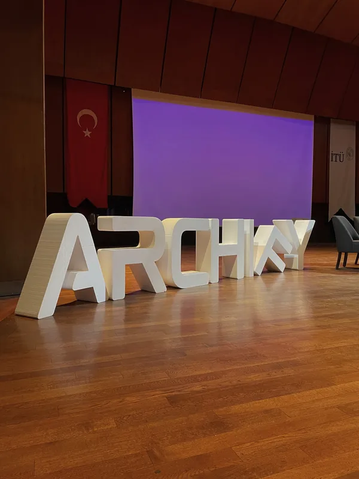

Mimarlık · Tasarım · Karşılaşmalar
Mimarlık etrafındabir araya gelelim.
Yeni fikirler için bir alan.
Yeni tanışıklıklar için bir başlangıç.
vizyona
ortak ol
Birlikte düşün, birlikte üret.Keşfet
Bir merakla başlar.
Aynı dünyaya,
başka açılardan.
Bir konuşma yeni bir fikre, bir tanışıklık ortak bir üretime dönüşebilir. Archify; mimarlık ve tasarıma merak duyanları sahnede, atölyede ve bazen bir kamp alanında buluşturur.

İstanbul Mimarlık Zirvesi · 2023
Arşivden bir hikâye
Bir sahne.
Birçok başlangıç.
İTÜ Maçka’da iki gün boyunca mimarlık konuşuldu. Yeni fikirler sahneden fuayeye, fuayeden bir sonraki buluşmaya taşındı.
Zirvenin hikâyesiKaynak: ARGEPLANO · AkademiOrtak hafızamız
Buluşmalar kalır.
Arşiv yükleniyor…
Bir sonraki karşılaşmaya
Sen de
vizyona ortak ol.
Merakını paylaşabileceğin insanlarla tanış.
Şehrindeki topluluğa katıl, yeni buluşmaları takip et.